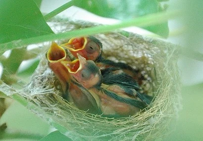
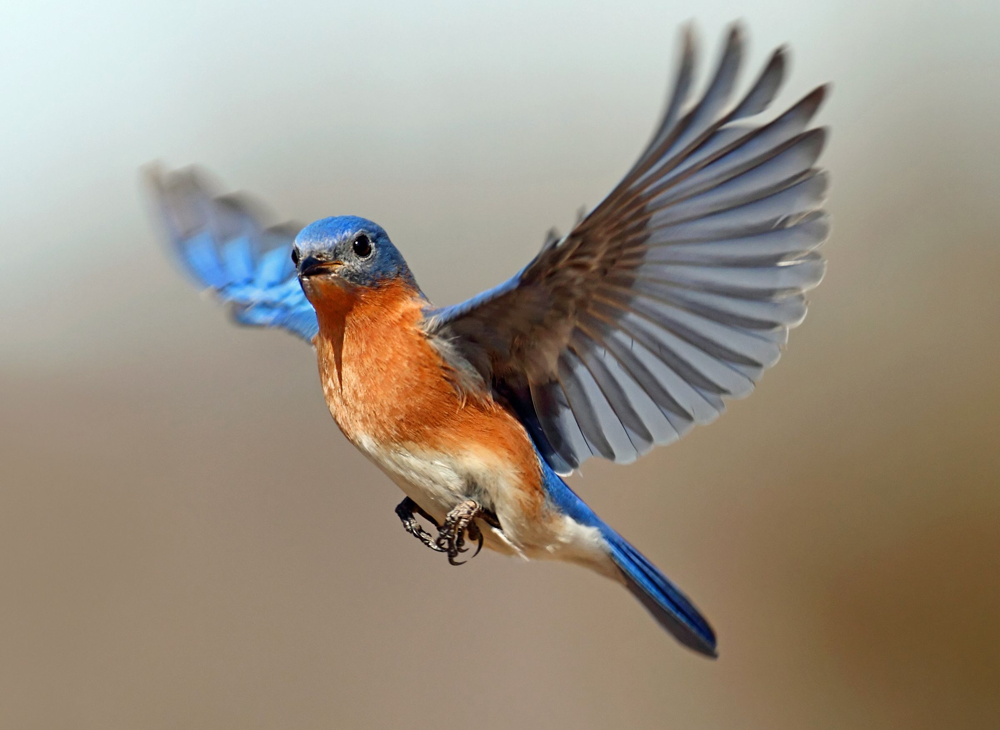

العصفور
نبذة تعريفية: العصافير طيور صغيرة جميلة ذات ألوان زاهية وأصوات عذبة.
سلوكيات: تحب التغريد والطيران داخل القفص أو في بيئة مفتوحة.
احتياجات: تحتاج إلى غذاء غني بالبذور والماء النظيف.
طريقة العناية: يجب تنظيف القفص بانتظام وتوفير مكان دافئ لها.
التطعيمات:
- تطعيم مرض الجدري: للحفاظ على صحة العصافير من الفيروسات.
- تطعيم نيوكاسل: لحمايتها من الأمراض التنفسية المعدية.
معلومات شيقة: بعض العصافير يمكنها تقليد الأصوات، كما أنها تتواصل مع بعضها البعض من خلال التغريد.

